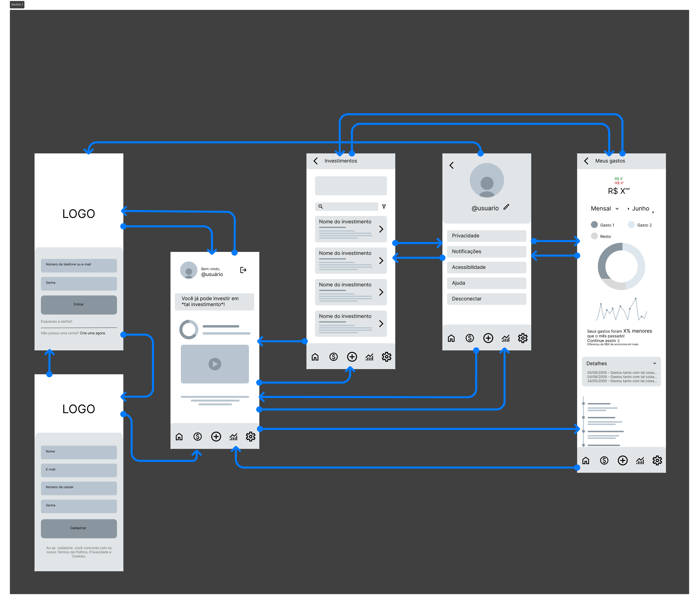
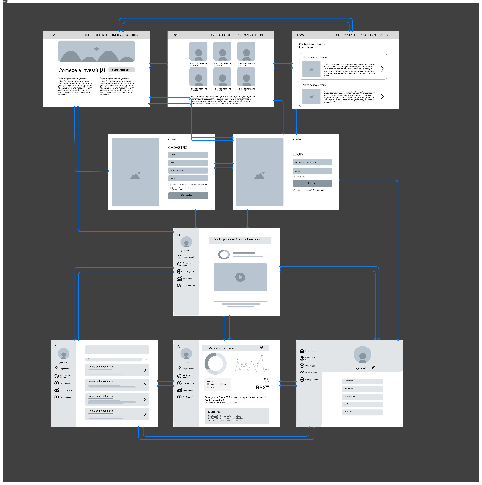
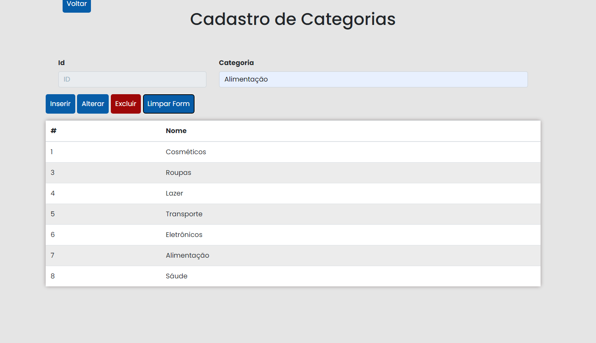
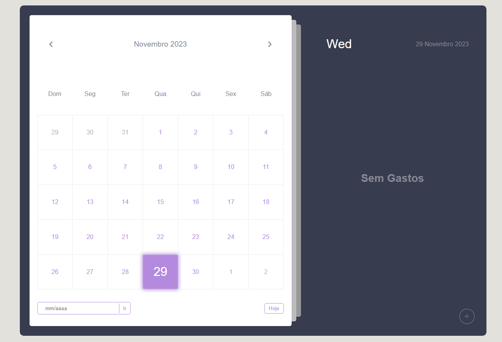
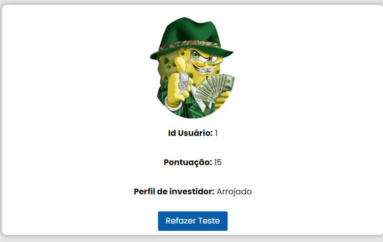
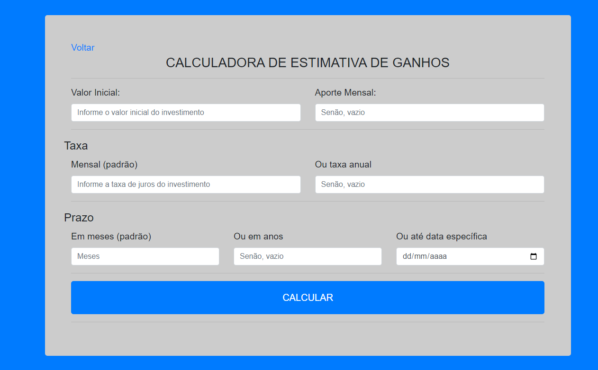
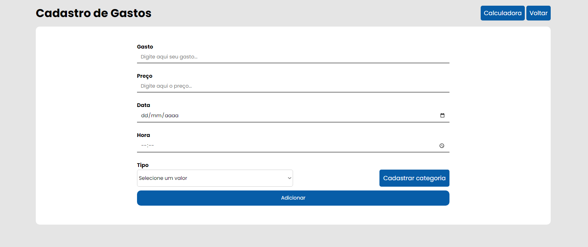

Introdução
Informações básicas do projeto como nome e membros da equipe.
Informações Gerais
- Projeto: ÉconoSage
- Repositório GitHub: Falta de educação financeira e desinformação
- Membros da equipe:
Contexto
Detalhes sobre o espaço de problema, justificativas e os objetivos do projeto.
Problema
A falta de educação financeira e a desinformação.
Objetivos
Auxiliar pessoas que possuem dificuldades para gerir seus gastos e àquelas que procuram dicas de investimentos baseadas em seu perfil. Promover a conscientização sobre a importância da educação financeira e combater a desinformação financeira, capacitando indivíduos e comunidades a tomar decisões financeiras informadas e responsáveis.
Justificativa
Com entrevistas realizadas, possível notar que muitas pessoas deixam de investir ora por não entender como fazer, ora por falta de gerenciamento de gastos.
Público-alvo
Pessoas Fundamentais: Pessoas sem conhecimento sobre
investimentos, Pessoas que não controlam seus gastos, Pessoas
experientes/Investidores.
Pessoas Importantes: Gerentes de banco, Gestores/Corretores
financeiros, Dependentes financeiros.
Pessoas Influenciadoras: Influenciadores Digitais, Familiares,
Escola.
Concepção (Design Thinking)
Detalhes do processo de discovery do projeto.
Apresente o processo de discovery do projeto. Com foco na experiência do usuário, esse processo abrange a compreensão do contexto do problema e das características do usuário, a definição do problema, a geração de ideias, a prototipagem e a elaboração de uma proposta de solução
Processo de Design Thinking
O arquivo que se segue apresenta o resultado desse processo.
Apresente o processo de Design Thinking realizado pelo grupo e documentado por meio do software Miro. No documento apresentado, devem ser incluídos: (1) a matriz CSD, (2) o mapa de stakeholders, (3) as personas, (4) as respectivas propostas de valor e (5) o processo de ideação identificando as ideias levantadas e sua priorização.
Especificações do Projeto
Documentação das especificações do projeto.
Apresente as especificações do projeto, incluindo as histórias de usuário e os requisitos funcionais e não funcionais.
Histórias de Usuários
Com base na análise das personas foram identificadas as seguintes histórias de usuários:
Apresente aqui as histórias de usuário que são relevantes para o projeto de sua solução. As Histórias de Usuário consistem em uma ferramenta poderosa para a compreensão e elicitação dos requisitos funcionais e não funcionais da sua aplicação. Se possível, agrupe as histórias de usuário por contexto, para facilitar consultas recorrentes à essa parte do documento.
EU COMO...PERSONA |
QUERO/PRECISO...FUNCIONALIDADE
|
PARA...MOTIVO/VALOR |
|---|---|---|
| Gabriel Arantes | Aprender sobre investimentos | Alcançar estabilidade financeira |
| Rodinei Amaral | Conseguir uma renda com investimentos | Não depender do salário do trabalho |
| Erika | Compartilhar minhas experiências | Ajudar pessoas a serem bem sucedidas |
Requisitos
As tabelas que se seguem apresentam os requisitos funcionais e não funcionais que detalham o escopo do projeto.
Com base nas Histórias de Usuário, enumere os requisitos da sua solução. Classifique esses requisitos em dois grupos:
- Requisitos Funcionais (RF): correspondem a uma funcionalidade que deve estar presente na plataforma (ex: cadastro de usuário).
- Requisitos Não Funcionais (RNF): correspondem a uma característica técnica, seja de usabilidade, desempenho, confiabilidade, segurança ou outro (ex: suporte a dispositivos iOS e Android).
Lembre-se que cada requisito deve corresponder à uma e somente uma característica alvo da sua solução. Além disso, certifique-se de que todos os aspectos capturados nas Histórias de Usuário foram cobertos.
Requisitos Funcionais
| ID | Descrição do Requisito | Prioridade |
|---|---|---|
| RF-001 | Cadastro e Login dos usuários | ALTA |
| RF-002 | Controle de Gastos | ALTA |
| RF-003 | Gráficos direcionados aos gastos do usuário | ALTA |
| RF-004 | Recomendações de investimentos | MÉDIA |
| RF-005 | Descrição do problema no País/Mundo | MÉDIA |
| RF-006 | Consulta/Alteração dos dados pessoais | ALTA |
Requisitos Não-Funcionais
| ID | Descrição do Requisito | Prioridade |
|---|---|---|
| RNF-001 | Funcionamento Offline | BAIXA |
| RNF-002 | Armazenamento de dados à longo prazo | MÉDIA |
| RNF-003 | Sistema Multiplataforma | MÉDIA |
| RNF-004 | Rapidez no processamento de dados do usuário | BAIXA |
| RNF-005 | Acessibilidade para deficientes visuais/auditivos | MÉDIA |
Projeto de Interface
Artefatos relacionados com a interface e a interacão do usuário na proposta de solução.
Apresente a ideia de interface que está sendo prevista para o projeto. Inclua os wireframes, o user/screen flow e o protótipo interativo.
User/Screen Flow e Protótipo interativo
Artefatos relacionados com a interface e a interacão do usuário na solução proposta.
O fluxo de usuário (User Flow) é uma técnica que permite
ao desenvolvedor mapear todo fluxo de telas do site ou
app. Essa técnica funciona para alinhar os caminhos e as
possíveis ações que o usuário pode fazer junto com os
membros de sua equipe.

Um protótipo interativo apresenta o projeto de interfaces
e permite ao usuário navegar pelas funcionalidades como se
estivesse lidando com o software pronto. Veja o exemplo a
seguir.
User Flow
Mobile
Web
Wireframes
Protótipo de telas do sistema em baixa fidelidade (rascunhos).
Os Wireframes são protótipos das telas da aplicação usados
em design de interface para sugerir a estrutura de um site
web e seu relacionamentos entre suas páginas. Um wireframe
web é uma ilustração semelhante ao layout de elementos
fundamentais na interface.

Metodologia
Detalhes sobre a organização do grupo e o ferramental empregado.
Nesta parte do documento, você deve apresentar a metodologia adotada pelo grupo, descrevendo o processo de trabalho baseado nas metodologias ágeis, a divisão de papéis e tarefas, as ferramentas empregadas e como foi realizada agestão de configuração do projeto via GitHub.
Coloque detalhes sobre o processo de Design Thinking e a implementação do Framework Scrum seguido pelo grupo. O grupo poderá fazer uso de ferramentas on-line para acompanhar o andamento do projeto, a execução das tarefas e o status de desenvolvimento da solução.
Ferramentas
Relação de ferramentas empregadas pelo grupo durante o projeto.
| Ambiente | Plataforma | Link de Acesso |
|---|---|---|
| Processo de Design Thinking | Miro | https://miro.com |
| Repositório de código | GitHub | https://github.com |
| Protótipo Interativo | Figma | https://figma.com |
Gestão do Projeto
Divisão de papéis no grupo e apresentação da estrutura da ferramenta de controle de tarefas (Kanban).
Apresente a divisão de papéis e tarefas entre os membros do grupo. Informe quem é o Scrum Master, o Product Owner e os desenvolvedores. Informe também quem é o responsável pela documentação do projeto.
Apresente o quadro de gerenciamento do time (Kanban), seu formato e as experiências na utilização dessa ferramenta (GitHub Projects)
Gestão do projeto: Divisão de papéis e apresentação da estrutura da ferramenta de controle de tarefas
(Kanban/Trello) https://trello.com
Scrum Master: Roberta Sophia Carvalho Silva
Product Owner: Eduardo Henrique Moreira dos Santos,
Roberta Sophia Carvalho Silva
Desenvolvedores: xxxxxxxx
Documentação: Bruno Benfica Lacerda
Campos, Bruno Ferraz Pires, Eduardo Henrique Moreira dos Santos, João Pedro Guimarães Ribeiro
Controle de Versão
Estrutura do fluxo de trabalho no ambiente do GitHub.
Discuta como a configuração do projeto foi feita na
ferramenta de versionamento (GitHub). Exponha como a
gerência de tags, merges, commits e branchs é realizada.
Discuta como a gerência de issues foi realizada.

Controle de versão: Estrutura do fluxo de trabalho no ambiente do GitHub https://github.com
Solução
Esta seção apresenta todos os detalhes da solução criada no projeto.
Apresente cada uma das funcionalidades que a aplicação fornece tanto para os usuários quanto aos administradores da solução.
Inclua, para cada funcionalidade, itens como: (1) titulos e descrição da funcionalidade; (2) Estrutura de dados associada; (3) o detalhe sobre as instruções de acesso e uso.
Video do Projeto
O vídeo a seguir traz uma apresentação do problema que a equipe está tratando e a proposta de solução.
O video de apresentação é voltado para que o público externo possa conhecer a solução. O formato é livre, sendo importante que seja apresentado o problema e a solução numa linguagem descomplicada e direta.
Utilize o recurso de compartilhamento via embed e inclua o vídeo logo abaixo.
...... COLOQUE AQUI O SEU VIDEO ......
Funcionalidades
Esta seção apresenta as funcionalidades da solução.
Apresente cada uma das funcionalidades que a aplicação fornece tanto para os usuários quanto aos administradores da solução.
Inclua, para cada funcionalidade, itens como: (1) titulos e descrição da funcionalidade; (2) Estrutura de dados associada; (3) o detalhe sobre as instruções de acesso e uso.
Funcionalidade 1 - Cadastro de Categorias >
Permite a inclusão, leitura, alteração e exclusão de categorias para o sistema
- Estrutura de dados: Categorias
-
Instruções de acesso:
- Abra o site e efetue o login
- Acesse o menu lateral e clique na opção Gastos
- Em seguida, escolha a opção Cadastrar e depois Cadastrar Categoria

Estruturas de Dados
Descrição das estruturas de dados utilizadas na solução com exemplos no formato JSON.
Apresente as estruturas de dados utilizadas na solução tanto para dados utilizados na essência da aplicação quanto outras estruturas que foram criadas para algum tipo de configuração
Nomeie a estrutura, coloque uma descrição sucinta e apresente um exemplo em formato JSON.
Estrutura de Dados - Categorias >
Categorias da aplicação
[
{
"id": 1,
"nome": "Cosméticos"
},
{
"id": 3,
"nome": "Roupas"
},
{
"id": 4,
"nome": "Lazer"
},
{
"id": 5,
"nome": "Transporte"
},
{
"id": 6,
"nome": "Eletrônicos"
},
{
"nome": "Alimentação",
"id": 7
}
]
Funcionalidade 2 - Calendário de Gastos >
Permite adicionar , excluir e vizualizar seus gastos no calendário, podendo ver o valor e o dia que foi feito a compra.
- Estrutura de dados: Calendário
-
Instruções de acesso:
- Abra o site e efetue o login
- Acesse o menu lateral e clique na opção Utilitários
- Em seguida, escola a opção do calendário

Funcionalidade 3 - Quiz do perfil do investidor >
O quiz apresenta 5 perguntas para o usuário, que dependendo das respostas, mostra o perfil que mais associa ao consumidor.
- Estrutura de dados: Quiz
-
Instruções de acesso:
- Abra o site e efetue o login
- Acesse o menu lateral e clique na opção Conta
- Em seguida, aperte para fazer o teste

Estrutura de Dados - Quiz >
Categorias da aplicação
[
{
"questão1": 3,
"questão2": 3,
"questão3": 3,
"questão4": 3,
"questão5": 3,
"valorTotal": 15,
"resultado": "Arrojado",
"id": 1
}
]
Funcionalidade 4 - Apresentar dados do Quiz >
Vizualizar pontuação , perfil do investidor e botão para refazer o teste.
- Estrutura de dados: Quiz
-
Instruções de acesso:
- Abra o site e efetue o login
- Acesse o menu lateral e clique na opção Conta

Estrutura de Dados - Apresentar dados de Quiz >
Categorias da aplicação
[
{
"questão1": 3,
"questão2": 3,
"questão3": 3,
"questão4": 3,
"questão5": 3,
"valorTotal": 15,
"resultado": "Arrojado",
"id": 1
}
]
Funcionalidade 5 - Calculadora de Ganhos >
Analisa e calcula a estimativa dos ganhos do investimento específico.
- Estrutura de dados: Calculadora Ganhos
-
Instruções de acesso:
- Abra o site e efetue o login
- Acesse o menu lateral e clique na opção Investimentos
- Em seguida, aperte no botão Calculadora

Funcionalidade 6 - Cadastro de Gastos >
Cadastro de gastos, com valor , data , hora , e tipo de gasto.
- Estrutura de dados: Cadastro de Gastos
-
Instruções de acesso:
- Abra o site e efetue o login
- Acesse o menu lateral e clique na opção Gastos
- Em seguida, aperte no botão cadastrar, para adicionar novos gastos

Estrutura de Dados - Cadastro de Gastos >
Categorias da aplicação
[
{
"gasto": "Camiseta Vermelha",
"preco": "125",
"data": "2023-10-19",
"hora": "08:01",
"tipo": "Roupas",
"id": 1
},
{
"gasto": "Camiseta Azul",
"preco": "130",
"data": "2023-11-04",
"hora": "11:07",
"tipo": "Roupas",
"id": 2
},
{
"gasto": "Camiseta Branca",
"preco": "100",
"data": "2023-11-16",
"hora": "17:34",
"tipo": "Roupas",
"id": 3
},
{
"gasto": "Calça Preta",
"preco": "500",
"data": "2023-11-18",
"hora": "18:40",
"tipo": "Roupas",
"id": 4
},
{
"gasto": "Ingresso Show",
"preco": "180",
"data": "2023-11-04",
"hora": "22:40",
"tipo": "Lazer",
"id": 5
},
{
"gasto": "Voo Barcelona",
"preco": "1600",
"data": "2024-01-05",
"hora": "23:45",
"tipo": "Viagem",
"id": 6
},
{
"gasto": "Air Jordan",
"preco": "899",
"data": "2023-11-12",
"hora": "10:45",
"tipo": "Tênis",
"id": 7
},
{
"gasto": "Iphone 15",
"preco": "13000",
"data": "2023-09-29",
"hora": "08:10",
"tipo": "Eletrônicos",
"id": 8
},
{
"gasto": "Computador",
"preco": "5.000",
"data": "2023-11-17",
"hora": "13:13",
"tipo": "Lazer",
"id": 9
},
{
"gasto": "Polo Lacoste",
"preco": "230",
"data": "2023-08-12",
"hora": "18:50",
"tipo": "Roupas",
"id": 10
},
{
"gasto": "Passagem de ônibus",
"preco": "5.00",
"data": "2020-10-12",
"hora": "10:26",
"tipo": "Transporte",
"id": 11
},
{
"gasto": "RP no Lolzinho",
"preco": "1850.00",
"data": "2001-12-24",
"hora": "04:40",
"tipo": "Entretimento ",
"id": 12
},
{
"gasto": "Perfume",
"preco": "800",
"data": "2023-12-02",
"hora": "21:20",
"tipo": "Cosméticos",
"id": 13
},
{
"gasto": "Teste",
"preco": "69",
"data": "2005-06-15",
"hora": "15:05",
"tipo": "Transporte",
"id": 14
}
]
Funcionalidade 7 - Apresentação de gastos >
Vizualização de todos os gastos cadastrados
- Estrutura de dados: Apresentação de Gastos
-
Instruções de acesso:
- Abra o site e efetue o login
- Acesse o menu lateral e clique na opção Gastos

Estrutura de Dados - Apresentação cadastro de gastos >
Categorias da aplicação
[
{
"gasto": "Camiseta Vermelha",
"preco": "125",
"data": "2023-10-19",
"hora": "08:01",
"tipo": "Roupas",
"id": 1
},
{
"gasto": "Camiseta Azul",
"preco": "130",
"data": "2023-11-04",
"hora": "11:07",
"tipo": "Roupas",
"id": 2
},
{
"gasto": "Camiseta Branca",
"preco": "100",
"data": "2023-11-16",
"hora": "17:34",
"tipo": "Roupas",
"id": 3
},
{
"gasto": "Calça Preta",
"preco": "500",
"data": "2023-11-18",
"hora": "18:40",
"tipo": "Roupas",
"id": 4
},
{
"gasto": "Ingresso Show",
"preco": "180",
"data": "2023-11-04",
"hora": "22:40",
"tipo": "Lazer",
"id": 5
},
{
"gasto": "Voo Barcelona",
"preco": "1600",
"data": "2024-01-05",
"hora": "23:45",
"tipo": "Viagem",
"id": 6
},
{
"gasto": "Air Jordan",
"preco": "899",
"data": "2023-11-12",
"hora": "10:45",
"tipo": "Tênis",
"id": 7
},
{
"gasto": "Iphone 15",
"preco": "13000",
"data": "2023-09-29",
"hora": "08:10",
"tipo": "Eletrônicos",
"id": 8
},
{
"gasto": "Computador",
"preco": "5.000",
"data": "2023-11-17",
"hora": "13:13",
"tipo": "Lazer",
"id": 9
},
{
"gasto": "Polo Lacoste",
"preco": "230",
"data": "2023-08-12",
"hora": "18:50",
"tipo": "Roupas",
"id": 10
},
{
"gasto": "Passagem de ônibus",
"preco": "5.00",
"data": "2020-10-12",
"hora": "10:26",
"tipo": "Transporte",
"id": 11
},
{
"gasto": "RP no Lolzinho",
"preco": "1850.00",
"data": "2001-12-24",
"hora": "04:40",
"tipo": "Entretimento ",
"id": 12
},
{
"gasto": "Perfume",
"preco": "800",
"data": "2023-12-02",
"hora": "21:20",
"tipo": "Cosméticos",
"id": 13
},
{
"gasto": "Teste",
"preco": "69",
"data": "2005-06-15",
"hora": "15:05",
"tipo": "Transporte",
"id": 14
}
]
Módulos e APIs
Esta seção apresenta os módulos e APIs utilizados na solução.
Apresente os módulos e APIs utilizados no desenvolvimento da solução. Inclua itens como: (1) Frameworks, bibliotecas, módulos, etc. utilizados no desenvolvimento da solução; (2) APIs utilizadas para acesso a dados, serviços, etc.
Images:
- Unsplash - https://unsplash.com/EXEMPLO
Fonts:
- Icons Font Face - https://fontawesome.com/EXEMPLO
Scripts:
- jQuery - http://www.jquery.com/EXEMPLO
- Bootstrap 4 - http://getbootstrap.com/
FAQ
Perguntas e respostas comuns associadas ao projeto.
Apresente uma lista de perguntas e respostas comuns associadas ao projeto. Inclua perguntas como: (1) detalhes de acesso e uso do projeto; (2) informações sobre a instalação e configuração da aplicação; (3) questões sobre a manutenção da aplicação; (4) detalhes sobre a integração da aplicação com outros sistemas; (5) questões sobre a segurança da aplicação.
Referências Bibliográficas
Esta seção apresenta as referências bibliográficas utilizadas no projeto.
Apresente as referências bibliográficas utilizadas no projeto. Inclua itens como: (1) livros, artigos, tutoriais, etc. utilizados no desenvolvimento da solução; (2) links para sites, blogs, etc. utilizados no desenvolvimento da solução.
EDUCAÇÃO FINANCEIRA AINDA NÃO É REALIDADE NAS SALAS DE AULA BRASILEIRAS. Infográficos Estadão.
LEWGOY, Júlia. Educação financeira nas escolas fica para trás em meio á democratização de investimentos. Valor Investe, 2021.
46% dos brasileiros não controlam seu orçamento. SPC Brasil, 2016.
Gestão de custos: o que é e como fazer. GestãoClick, 2023.
FURLAN, Mariana. Endividamento das famílias é de quase 80%. Serasa, 2023.
ABDALA, Vitor. Endividamento atinge 78,3% das famílias brasileiras, diz CNC. Agência Brasil, 2023.